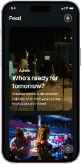
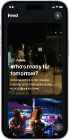
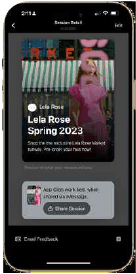

THE SHOPPABLE VIDEO
Device agnostic, transportable and interactive video shopping experiences. These experiences are where content connects with products.
 

THE STOREFRONTS
A three-way marketplace allowing controlled access to exclusive, customizable preferenced based content.

THE CREATOR STUDIO
A tool for creators to author videos, layer products from live commerce engines, share and track shoppable experiences in minutes.

THE CONTROL CENTER
The powerful behind the scenes one stop shop for to get live data feeds with actionable insights, and full control over data, access, and administration.